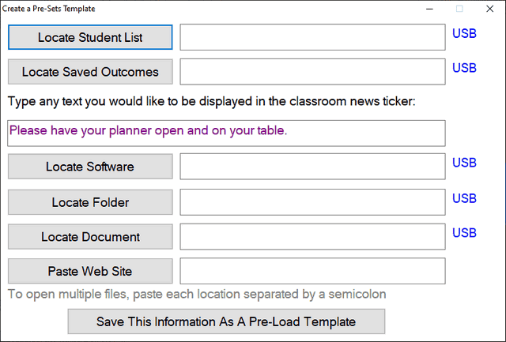

Create Pre-sets Template
During the teaching day, every second counts - and time spent preparing your board as a class arrives can mean the lesson does not run as smoothly as it could and teachers feel stressed from trying to set-up while students are waiting.
To save time, you can create a file pointing the Teacher Toolkit towards a range of files you need for the lesson.
This includes:
•The location of your pre-saved student list - to be used by the Random Student Selector
•The location of a pre-saved learning outcome - to be displayed in the Learning Outcome Frame
•Text you would like to have displayed in the Classroom News Ticker
•The location of a piece of software you would like loading - such as your register, or application to be used in a demonstration.
•The location of a folder you would like to load.
•The location of a document you would like to load.
•The location of a web-site you would like to load.

NOTE:
If you would like the drive letter to be replaced by the same drive letter as the location of the Pre-Set Document (for example, if you are using a USB drive), then use the word "UsePortableDrive" instead of the drive letter.
This is done automatically for you if you click the blue text "USB" on the end of a row.
e.g.
E:\My folder\My class list.txt
becomes
UsePortableDrive:\My folder\My class list.txt
Top tip:
Should you require more than one file, folder, link, webpage or student list, to open at the start of a lesson - paste each location into the box, separating them with a semicolon.